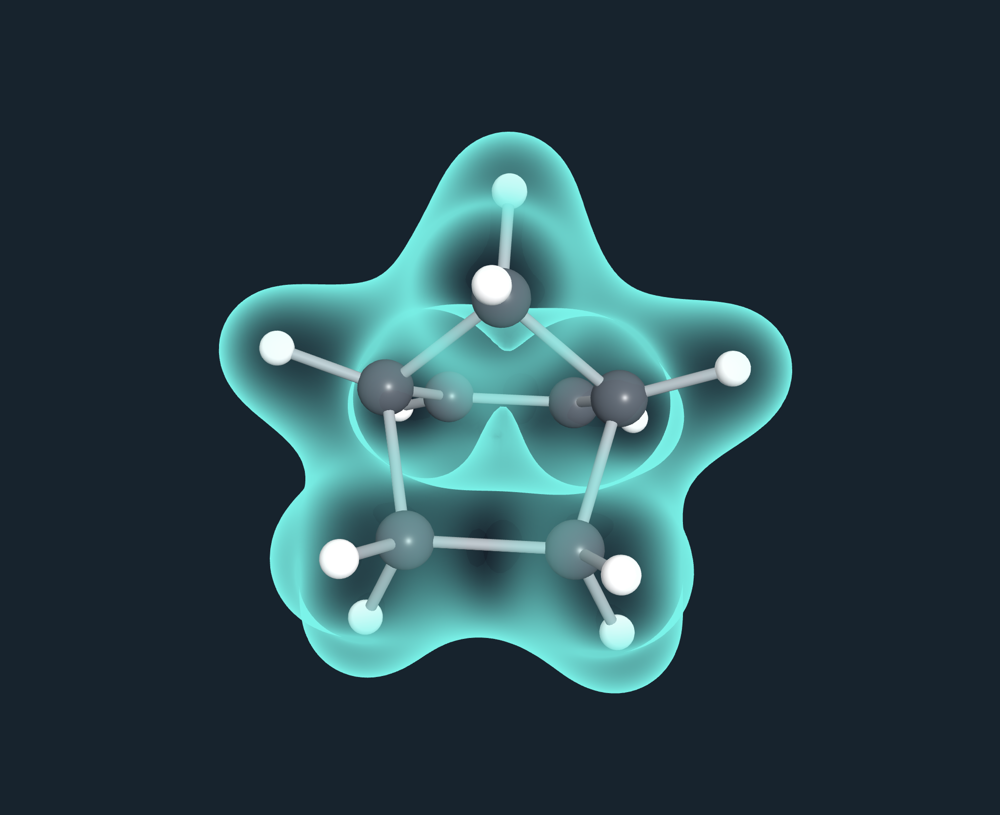

SHADER STUDY
Reveal the framework
An X-ray shader makes the density envelope translucent toward the viewer and bright at its rim. The carbon cage remains visible inside. Density isovalue: 0.04 electrons/bohr³; grid: 256³.
Make this view →